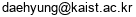
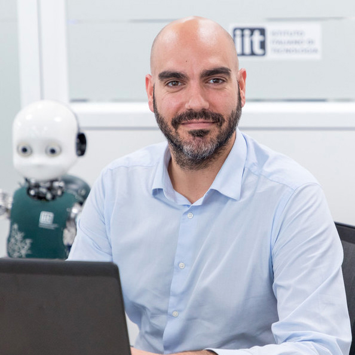
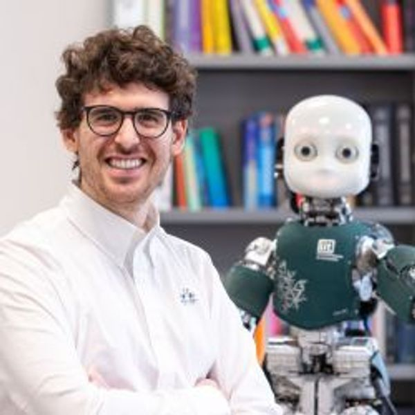

The workshop aims to discuss the development of next-generation humanoids designed to learn tasks through physical and social interactions with humans. The next humanoids are expected to perform diverse tasks with human-level skills, such as manipulation, assembly, and delivery, in various environments. However, despite having the physical capabilities for these tasks, programming the robots to execute them remains highly challenging. One potential approach involves designing humanoids that can learn tasks by communicating with humans through both verbal and non-verbal methods. This workshop will explore strategies to achieve this goal, in various aspects.
The organizers strongly believe that a workshop is an appropriate forum for approaching this topic, as it facilitates direct access to experts in the field and face-to-face discussions.
Description
What capabilities should the next-generation humanoids have? As attention shifts toward large language models, we envision more interactive robots that can communicate with, learn from, and evolve alongside humans. However, much of the current research has primarily focused on hardware design, control, and learning for specific tasks. To accomplish complex tasks, this workshop discusses three main questions to enable robots to work collaboratively and/or effectively alongside humans:
Human-Robot Communication: how can robots understand human intent or instruction for effective task completion? This involves verbal and non-verbal communication using diverse modalities and recent advancements in large models such as large multi-modal models (LMM).
Shared/Collaborative Control: how can robots learn task skills from human interactions? This can be achieved by observing multimodal human behaviors including kinesthetic teaching and visual demonstrations, toward the construction of foundation models.
Trusted Design: how can we ensure robots are reliable and robust for physical-social collaboration with humans? These designs are to assist or substitute humans while ensuring safety in human-robot collaboration.
This workshop aims to bridge the gap between current capabilities and the desired interactive, task-learning humanoids by fostering discussions and collaborations among experts in the field.
Submissions
We solicit 1-2 page extended abstracts (page counts do not include references). Submissions can include original research, position papers, and literature reviews that bridge the research areas for this workshop. Submissions will be reviewed, and selected based on technical content and ability to positively contribute to the workshop. All accepted contributions will be presented in interactive poster sessions. All accepted contributions will be featured in the workshop as spotlight presentations.
The following list contains some areas of interest, but work in other areas is also welcomed:
- Communication methods for seamless collaboration with humans including multi-modal interfaces, perception systems, intention recognition approaches, etc.
- Robot learning algorithms to improve manipulation capabilities over time including imitation learning, foundation models, continual learning, etc.
- Robot design for physical-social human-robot interaction including pHRI, sensors, safety mechanisms, etc.
We will accept papers in the official IEEE templates (LaTeX and Word). Submissions must meet page restrictions (1-2 pages for extended abstracts), but can include additional pages as long as those pages only contain references. Reviewing will not be double blind. Please do not anonymize the submission.
Paper abstracts should be submitted through e-mails: 
Important Dates
- Oct. 23
- Extended abstract submission deadline (23:59 in Pacific time)
- Oct. 30
- Notification of acceptance
- Nov. 22
- Workshop
Program
Location
Workshop: TBD
Poster: TBD
| Time | Topic | Speaker |
|---|---|---|
| 13:30 - 13:45pm | Introduction | Daehyung Park |
| 13:45 - 14:15pm | TBD | Beomjoon Kim |
| 14:15 - 14:45pm | Learning From Demonstration Like a Juicer: Squeezing Every Last Drop out of Human Input | Oliver Brock |
| 14:45 - 15:00pm | Spotlight Talks | TBD |
| 15:00 - 15:30pm | Coffee break + Poster Session | |
| 15:30 - 16:00pm | TBD | Yue Hu |
| 16:00 - 16:30pm | TBD | Daniele Pucci |
| 16:30 - 17:00pm | TBD | Nadia Figueroa |
Tentatively accepted speakers
 |
Beomjoon Kim, Korea Advanced Institute of Science and Technology |
Oliver Brock, Technical University Berlin |
|
Yue Hu, The University of Waterloo |
|
 |
Daniele Pucci , Italian Institute of Technology (IIT) |
 |
Nadia Figueroa , University of Pennsylvania |
Organizers
Organizing Committee
Daehyung ParkSchool of ComputingKorea Advanced Institute of Science and Technology |
||
Jaeheung ParkGraduate School of Convergence Science and TechnologySeoul National University |
||
Tapomayukh BhattacharjeeDepartment of Computer ScienceCornell University |
||
|  |
Daniele PucciArtificial and Mechanical IntelligenceItalian Institute of Technology (IIT) |
|
|  |
Giulio RomualdiArtificial and Mechanical IntelligenceItalian Institute of Technology (IIT) |